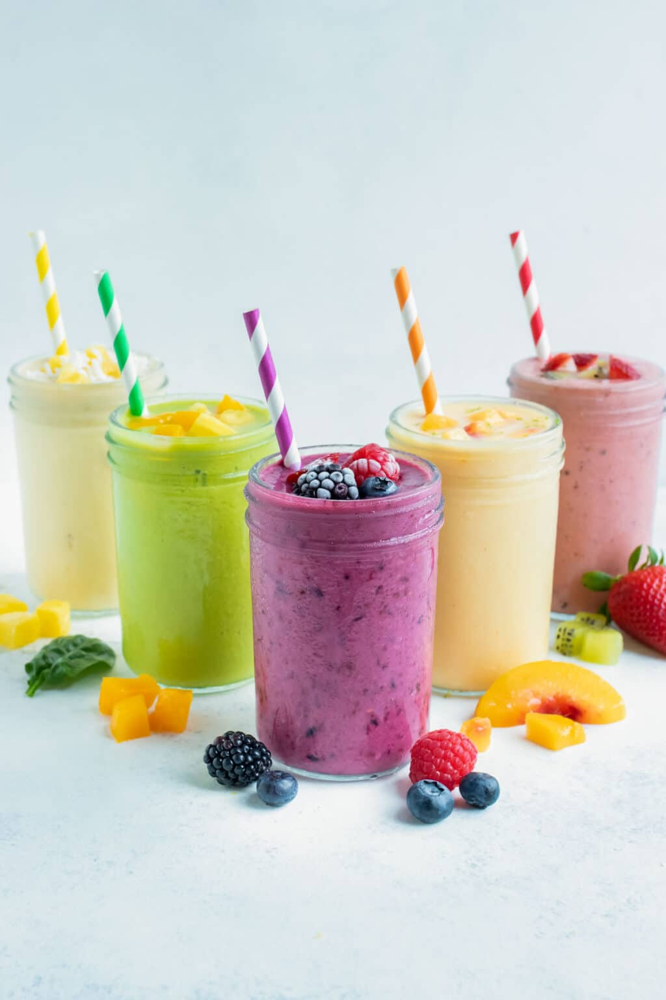

Fruit Smoothie

Description
If you want to know How to Make ANY Fruit Smoothie
using fresh and frozen ingredients, look no further
than this basic recipe. Once you learn this simple
formula, you'll be able to mix it up with berries
and tropical fruits, add in greens such as spinach
or kale, and even make them vegan and dairy-free.
And the best part? You only need a few simple ingredients
and less than 5 minutes to make the best homemade smoothie.
Ingredients
- 1/2 cup mil
- 1/4 cup yogurt
- 1 cup fresh fruit
- 2 cups frozen fruit, thawed for 5-10 minutes
- 1-2 tsp sweetener(optional)
- Optional add-ins: Nuts, seeds, oils, spices, oats, protein powder etc
Steps
- Pour liquid into a blender along with yogurt, fresh fruit,
frozen fruit, sweetener, and any optional add-ins. (In this order
if using a traditional blender or in the reverse order if using a
personal blender.)
- Blend ingredients until smooth and well combined.
Back